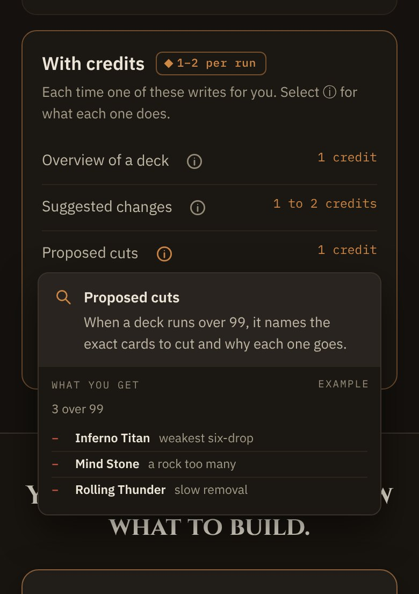
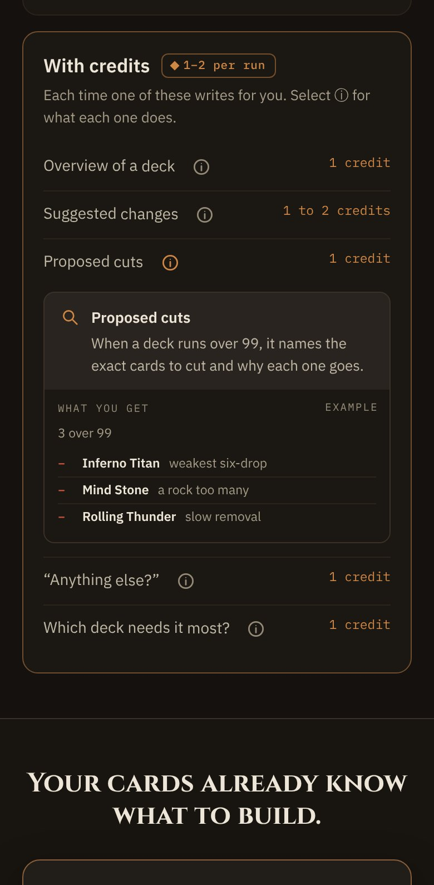

On a phone, opening a tip in With credits drew it over the rows below. A4 takes engineering’s recommendation: below 768 the tip opens in the flow under its row and pushes the rows down, while 768 and up keep the shipped floating tip. Everything else in the landing handoff stays locked.
| Width | Tip | Opens | Closes | Page |
|---|---|---|---|---|
| below 768 | In the flow under its row, row-wide, no shadow | Press the ⓘ | The same ⓘ, another ⓘ, Escape | Rows below move down; the pressed row is held in place when a tip above closes; an open tip scrolls into view |
| 768 and up | Floating 330px card, as shipped | Hover, keyboard focus or press, as shipped | As shipped: second press, Escape, press outside | Nothing moves |


credit-tips.tsx only. Row: max-md:flex-wrap. Tip: anim-menu-in max-md:basis-full max-md:mt-[2px] max-md:mb-[3px], and the float’s classes behind md: (md:absolute md:left-[-8px] md:top-[calc(100%-2px)] md:z-30 md:w-[330px] md:shadow-[…], plus today’s hover-only pointer-events-none).aria-expanded plus aria-controls on the tip’s id, and the tip drops role=tooltip. The outside-press listener runs only from 768.credit-tips.test.tsx; no data, flag or copy change. See READINESS.md in addendum-phone-tips/.